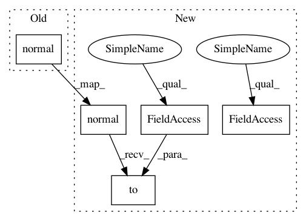

ff9c1dac887643e464f5f829c7d8b920b0aa8140,rllib/utils/exploration/gaussian_noise.py,GaussianNoise,_get_torch_exploration_action,#GaussianNoise#Any#Any#Any#,139
Before Change
else:
det_actions = action_dist.deterministic_sample()
scale = self.scale_schedule(self.last_timestep)
gaussian_sample = scale * torch.normal(
mean=torch.zeros(det_actions.size()), std=self.stddev)
action = torch.clamp(det_actions + gaussian_sample,
self.action_space.low.item(0),
self.action_space.high.item(0))
// No exploration -> Return deterministic actions.
After Change
else:
det_actions = action_dist.deterministic_sample()
scale = self.scale_schedule(self.last_timestep)
gaussian_sample = scale * torch.normal(
mean=torch.zeros(det_actions.size()), std=self.stddev).to(
self.device)
action = torch.min(
torch.max(
det_actions + gaussian_sample,
torch.tensor(
self.action_space.low,
dtype=torch.float32,
device=self.device)),
torch.tensor(
self.action_space.high,
dtype=torch.float32,
In pattern: SUPERPATTERN
Frequency: 3
Non-data size: 5
Instances
Project Name: ray-project/ray
Commit Name: ff9c1dac887643e464f5f829c7d8b920b0aa8140
Time: 2020-07-28
Author: sven@anyscale.io
File Name: rllib/utils/exploration/gaussian_noise.py
Class Name: GaussianNoise
Method Name: _get_torch_exploration_action
Project Name: ray-project/ray
Commit Name: d9f1874e3489edc915228dcfdae64d5294034464
Time: 2020-10-27
Author: sven@anyscale.io
File Name: rllib/models/torch/modules/noisy_layer.py
Class Name: NoisyLayer
Method Name: forward
Project Name: ray-project/ray
Commit Name: ff9c1dac887643e464f5f829c7d8b920b0aa8140
Time: 2020-07-28
Author: sven@anyscale.io
File Name: rllib/agents/ddpg/ddpg_torch_policy.py
Class Name:
Method Name: ddpg_actor_critic_loss
Project Name: ray-project/ray
Commit Name: ff9c1dac887643e464f5f829c7d8b920b0aa8140
Time: 2020-07-28
Author: sven@anyscale.io
File Name: rllib/utils/exploration/gaussian_noise.py
Class Name: GaussianNoise
Method Name: _get_torch_exploration_action